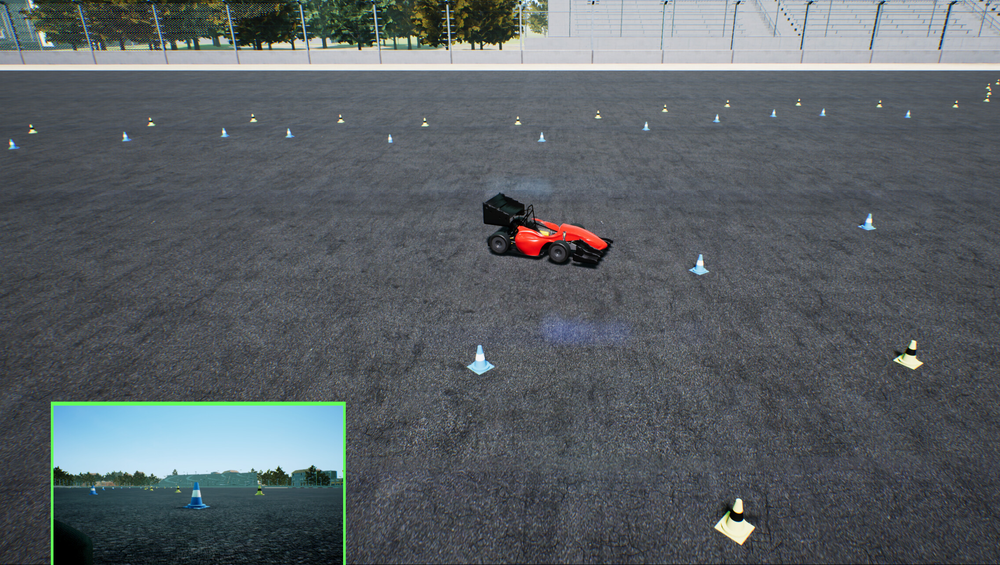
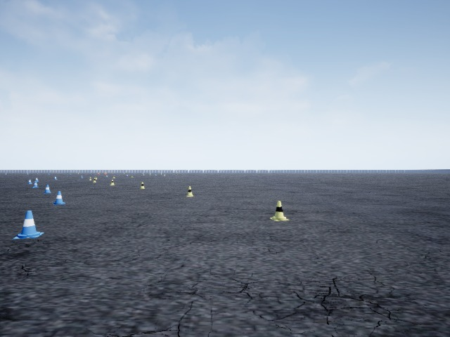
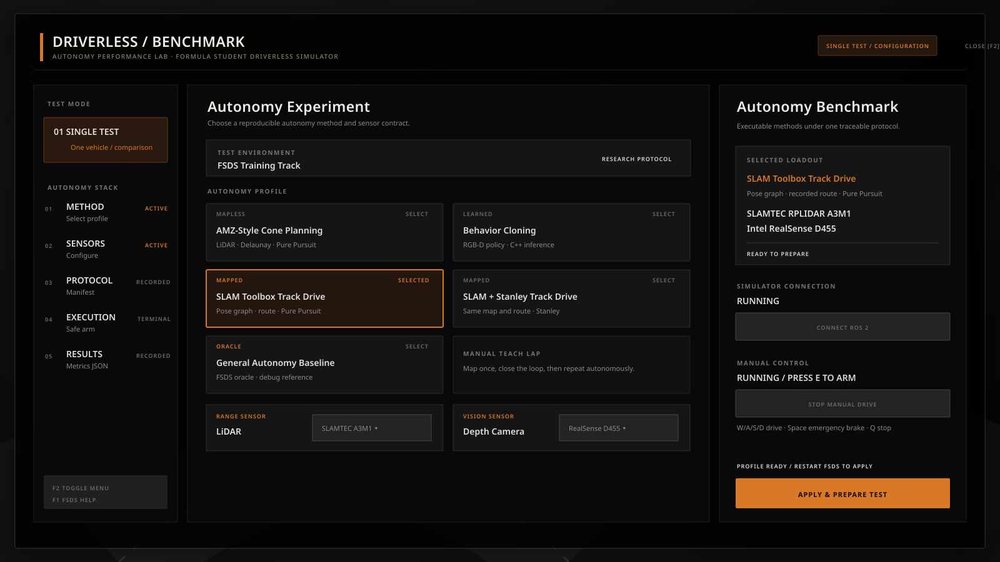

| Simulation platform FSDS v2.2 source integrated ROS 2 Humble bridge Standalone LinuxNoEditor package | Sensors LiDAR profiles and C++ processing RGB/RGB-D depth profiles IMU, TF and QoS adapters |
| Autonomy Pure Pursuit and Stanley Delaunay cone planning SLAM teach/localize/repeat | Research tooling Immutable Single Test manifests Behavior-cloning pipeline In-simulator benchmark menu |
The project has progressed from an FSDS checkout and manual ROS bridge bring-up into a substantial autonomy research platform. The current tree contains ten ROS 2 packages, 31 launch/operation scripts, 78 relevant source/configuration files, and approximately 9,093 lines of C++/Python source. It supports configurable sensor contracts, manual control, RGB-D visualization, VIO/VSLAM baselines, repeatable benchmark manifests, LiDAR cone planning, SLAM-based teach-and-repeat, and behavior-cloning data collection/inference infrastructure.
The intended product is an autonomy benchmark tool analogous to a graphics benchmark: choose a sensor and algorithm configuration, execute the same track protocol, and compare completion, lap time, cone contact, speed, stability, and compute behavior under a traceable manifest.
| Choice family | Implemented or planned options | Measured output |
|---|---|---|
| Sensors | A1M8, A3M1, FSDS 16-layer; HP60C, D415, D435, D455; combined LiDAR + RGB-D | Topic availability, rate, range contract, latency/freshness |
| Localization / SLAM | Sensor odometry, RGB-D odometry, RTAB-Map, SLAM Toolbox mapping/localization | Loop return, map availability, localization continuity |
| Planning | Reactive Delaunay, persistent mapped centerline, recorded route, behavior cloning, oracle debug baseline | Completion, path validity, interventions |
| Control | Pure Pursuit, Stanley; PID/state-estimator package work remains | Lap time, speed, cross-track behavior, cone contact |
The planned mode runs three or four vehicles with different profiles, observes them from top/spectator views, and evaluates lap performance, overtaking and collision avoidance. This requires multi-vehicle namespacing, spawn control, per-vehicle bridges, command arbitration and race-state scoring. It is not yet implemented.
FSDS / Unreal Engine 4.27
|
AirSim RPC 127.0.0.1:41451
|
fsds_ros2_bridge
|
+-------------+-------------+-------------+-------------+
| | | |
LiDAR RGB / depth IMU/GSS Test telemetry
| | | |
cone detector VIO / VSLAM / BC sensor_odometry |
| | | |
Delaunay / route / learned policy ---- localization ----------+
|
Pure Pursuit / Stanley
|
safety-gated control command
|
FSDS vehicle
In-simulator UI or single-test command
|
+-- prepare profile -> generated settings + immutable manifest
+-- restart FSDS -> selected sensor contract becomes active
+-- bridge -> ROS graph and TF
+-- launch disabled -> readiness inspection / RViz
+-- arm -> motion + timing
+-- stop -> brake, cleanup, JSON result
The only active checkout is /home/satvara/Github/Autonomous-kart-Sim. FSDS source is under FSDS/, ROS 2 work under FSDS/ros2/, and the authoritative active settings file is FSDS/settings.json.
| Date | Change / test | Evidence and engineering result |
|---|---|---|
| 31 Jul | Repository initialized. | 5ceca7f7; starting point for the simulator benchmark project. |
| 07 Aug | FSDS source, ROS 2 fs_msgs and bridge dependencies integrated. | db1df596, 0d4114b9, 134a7e5f. |
| 08 Aug | AirSim math dependencies merged. | bb03f06b, d614d421. |
| 09-11 Aug | Depth/RGB-D support, D455 profile, keyboard teleop, workspace relocation, VIO and VSLAM baselines. | 3e18d82a through 8c5978b7. Camera, depth and odometry topics became operational. |
| 12 Aug | Teleop shortcut, VIO/RGB-D merge and RTAB-Map correction. | 22c26c60, 862940d4, db6c9ddf. |
| 13 Aug | Initial simulation HUD test. | 398c03aa, merged as 4b60f1e7. |
| 14 Aug | Autonomy tests and LiDAR logic converted to C++. | 0c918218, 9922c7c2, 8087e8c8. |
| 17 Aug | Single Test manifest and session infrastructure. | 5346af0d; reproducible settings/manifest/result contract introduced. |
| Date | Change / test | Evidence and engineering result |
|---|---|---|
| 19 Aug | Benchmark HUD iterations and UI patch. | b79e9c3b through a417b780. |
| 20 Aug | Single Test autonomy passed software integration and sensor settings updated. | cc223e13, fa0298cb, 6385f889. |
| 24 Aug | Custom map and Single Test update. | 9cf30e2c; historical JSON run evidence preserved. |
| 28 Aug | Behavior-cloning collection, training/export and C++ inference pipeline added. | 92185f51, b3cbbad5. |
| 29 Aug | Local planner and autonomy baseline extended. | 461c6180, 2a2d32f8. |
| 01-05 Sep | Repository-local settings, autonomy YAML, explicit arm/disarm and terminal launch consolidation. | 157d97ed through a3e42483. |
| 15 Sep | Autonomy benchmark UI, palette, general baseline, teach phase, persistent triangulation and working triangulation. | 1263ea26 through 8813ff29. |
| 17 Sep | RViz profile selection and normal standalone simulator package. | b3cfedcc, 88e318a6; packaged UI runtime smoke test passed. |
| Package | Current role | Status |
|---|---|---|
| fsds_ros2_bridge | AirSim RPC, sensors, vehicle commands, clock and TF. | Implemented |
| single_test | Profile validation, settings generation, manifests, lifecycle and result JSON. | Implemented |
| sensor_interface | Simulator/physical sensor adapters, currently IMU reframing. | Baseline |
| teleop | C++ keyboard control with arm/brake/quit controls. | Implemented |
| vio | RGB-D odometry and camera-frame IMU initialization contract. | Baseline |
| vslam | RTAB-Map RGB-D mapping and loop closure. | Baseline |
| slam | LaserScan conversion, sensor odometry, SLAM Toolbox and route recording. | Implemented baseline |
| autonomy | Cone detection, Delaunay planning, persistent map, route planning and controllers. | Implemented baseline |
| behavior_cloning | Demonstration capture, training/export, C++ inference and benchmark safety. | Pipeline implemented |
| fs_msgs | FSDS messages and services used by bridge and benchmark. | Implemented |
| Package | Planned responsibility |
|---|---|
| interfaces | Common autonomy messages/services independent of FSDS. |
| state_estimator | Wheel odometry, chassis IMU and VIO fusion with covariance. |
| perception | Cones, obstacles and free-space estimation. |
| control | Controller plugins, command arbitration and real-vehicle interface. |
FSDS standalone/editor -> AirSim RPC :41451 -> fsds_ros2_bridge
|
/fsds/lidar/Lidar1, RGB, depth, IMU, GSS,
wheel states, signals, testing telemetry,
/fsds/control_command and TF
The bridge was built for Ubuntu 22.04 / ROS 2 Humble in the kart-ros2-humble Distrobox. Connection was confirmed independently with nc -vz 127.0.0.1 41451 and through the ROS topic graph.
cd /home/satvara/Github/Autonomous-kart-Sim ./FSDS.sh # normal bridge / test entry points FSDS/ros2/scripts/bridge-start FSDS/ros2/scripts/single-test check
/clock, /fsds/cam1/*, /fsds/cam2/*, /fsds/control_command, /fsds/gps, /fsds/gss, /fsds/imu, /fsds/lidar/Lidar1, /fsds/lidar/Lidar2, /fsds/signal/go, /fsds/testing_only/odom, /fsds/testing_only/track, /fsds/wheel_states, /tf_static
| Profile | Range | Scan contract | Use |
|---|---|---|---|
| A1M8 | 12 m | 1 layer, 1,600 points, 5 Hz, 360 degrees | Low-cost 2D SLAM comparison |
| A3M1 | 25 m | 1 layer, 1,600 points, 10 Hz, 360 degrees | Mapped SLAM benchmark |
| FSDS 16 | 100 m | 16 layers, 4,096 firings, 10 Hz, forward 180 degrees | Dense development/autonomy profile |
| Profile | Resolution / rate | FOV / range | Limit |
|---|---|---|---|
| YDLIDAR HP60C | 640x480 at 20 Hz | RGB 80.9°, depth 73.8°, 0.2-4.0 m | No physical structured-light noise/projector model |
| RealSense D415 | 1280x720 at 30 Hz | RGB 69.4°, depth 65°, 0.16-10 m | No stereo/shutter artifact model |
| RealSense D435 | 848x480 at 30 Hz | RGB 69°, depth 87°, 0.105-10 m | No physical baseline/projector behavior |
| RealSense D455 | 848x480 at 30 Hz | RGB/depth 86°, 0.4-6.0 m, nominal 95 mm baseline | FSDS renders depth; baseline does not create disparity |

fsds/FSCar -> fsds/front_rgb translation: [0.800, 0.000, 0.800] RPY: [-90 degrees, 0 degrees, -90 degrees] camera optical convention: +Z forward, +X right, +Y down vehicle convention: +X forward, +Y left, +Z up
| Symptom | Diagnosis | Resolution |
|---|---|---|
| Depth image black/blank | Incorrect image capture/visual interpretation. | Use metric depth topic and appropriate RViz/Image display normalization. |
| RGB and depth frame IDs differed | XYZRGB node requires registered frames. | Publish common optical frame for registered data. |
| RViz received no point cloud | Reliability QoS incompatible. | Set RViz display to Best Effort / Sensor Data. |
| Cloud appeared vertical/perpendicular | Optical-to-vehicle rotation missing/wrong. | Correct static TF and use vehicle/map fixed frame. |
The vio package launches synchronized RGB-D odometry and an IMU adapter, publishing /localization/vio/odometry. Recorded console evidence showed repeated RTAB-Map odometry updates with roughly 700-800 visual correspondences and approximately 0.10-0.13 s delay.
RTAB-Map receives RGB, depth, calibration, VIO odometry and IMU initialization. Loop-closure views and a 3D cloud were observed. Early 3D-map displays looked like dense planar cells because the depth cloud was being visualized without a useful persistent trajectory/map interpretation.
RGB + registered metric depth + camera_info
|
rgbd_odometry + IMU init
|
RTAB-Map graph / loop closure
|
map -> vio/odom -> fsds/FSCar
/fsds/lidar/Lidar1 -> LaserScan -> SLAM Toolbox -> slam/map
IMU + GSS -> sensor_odometry -> sensor/odom -> fsds/FSCar
saved route + localized pose -> route_planner -> Pure Pursuit / Stanley
| Run | Outcome | Lap | Distance | Cones |
|---|---|---|---|---|
| Manual mapping | Manual stop | 456.16 s | 504.11 m | 0 |
| Manual mapping | Lap target | 459.61 s | 461.77 m | 0 |
| SLAM Toolbox track drive | Lap target | 543.75 s | 543.63 m | 0 |
/fsds/lidar/Lidar1 -> cone_detector -> /autonomy/cones/left + /autonomy/cones/right -> local_planner -> /autonomy/delaunay_midpoints + /autonomy/local_path -> pure_pursuit -> /fsds/control_command
| Visualization | Meaning |
|---|---|
| Dark lines | Raw Delaunay triangulation. |
| Pale blue | Valid cross-track gates. |
| Green | Candidate centerlines explored by beam search. |
| Thick red | Lowest-cost candidate. |
| Magenta path | Smoothed path consumed by controller. |
Three delaunay_phase1 results ended by manual stop or 180 s time limit. Distances were 0-6.36 m; none completed a lap. These files are useful failure evidence but not proof of autonomous operation.
FSDS/ros2/scripts/single-test prepare amz_style # restart/start FSDS FSDS/ros2/scripts/single-test teach-run --laps 1 # required replay artifacts track_sensor.posegraph + track_sensor.data track_sensor.pgm + track_sensor.yaml cone_map.json + centerline_delaunay.json route_sensor_slam.json
| Artifact | Current state |
|---|---|
| Closed sensor-SLAM teaching route | Present; 808 points, geometric loop closure. |
| Active sensor pose graph/map | Missing; timestamped backups exist. |
| Persistent cone map | Missing. |
| Delaunay centerline | Missing. |
| Autonomous replay result | Not demonstrated. |

| Stage | Implementation |
|---|---|
| Collect | C++ synchronized RGB, metric depth, speed and expert command recorder. |
| Validate | Timestamp, range, resolution, encoding and file-existence checks. |
| Train | PyTorch RGB and RGB-D models; split by complete run, not adjacent frames. |
| Export | ONNX plus immutable preprocessing/model metadata. |
| Shadow | Publish prediction separately while expert retains control. |
| Drive | C++ OpenCV-DNN inference with stale-input brake, limits, launch assist and disabled start. |
| Benchmark | 60 s limit, lap/cone stop and JSON result. |
| Profile | Pipeline | Claim boundary |
|---|---|---|
| AMZ style | LiDAR cones -> Delaunay -> Pure Pursuit | Deployable local/mapped autonomy baseline. |
| Behavior cloning | RGB-D + speed -> learned C++ policy | Requires held-out model and repeat trials. |
| SLAM | SLAM Toolbox graph + recorded route -> Pure Pursuit | Sensor-derived mapped autonomy. |
| SLAM + Stanley | Same graph/route -> Stanley | Controller comparison with identical artifacts. |
| General autonomy | Testing-only track/odom -> Pure Pursuit | Privileged simulator oracle only. |
single-test prepare PROFILE -> validate YAML + sensor catalog -> generate settings.json + immutable manifest -> apply canonical FSDS/settings.json single-test launch PROFILE -> bridge if required -> stack starts DISABLED -> readiness gates -> operator confirmation -> arm + time + record -> stop/brake + result JSON
Duration, integrated distance, average and maximum speed, FSDS lap times, cone contacts, completion reason, exact sensor/algorithm selection, map/model paths and research metadata.

cd /home/satvara/Github/Autonomous-kart-Sim ./FSDS.sh # rebuild after Unreal/C++ HUD changes FSDS/scripts/fsds-package --development
The package is a LinuxNoEditor build, approximately 2.5 GB, with a repository-root launcher. It opens the normal FSDS menu; selecting TrainingMap loads the simulator and benchmark HUD. No FSOnline Editor or Unreal Editor is needed during routine operation.
| Failure | Cause | Correction |
|---|---|---|
| Non-editor C++ build failed in Chaos. | Linux game target disabled Unreal PCH behavior. | Restored default PCH handling. |
| HUD header failed outside unity/editor build. | SComboBox template lacked direct include. | Included Widgets/Input/SComboBox.h. |
| TrainingMap package crashed loading car. | TechnionCar Blueprint loaded dynamically and not cooked. | Always cook Technion car and wheel assets. |
| Weather classes missing at runtime. | Weather assets also dynamically loaded. | Always cook /AirSim/Weather. |
| Key | Function |
|---|---|
| E | Arm/disarm manual control. |
| W / S | Throttle / reverse or deceleration behavior. |
| A / D | Steer left / right. |
| Space | Emergency brake. |
| Q | Stop teleop process. |
launch throttle: 0.55 pulse duration: 0.10 s release speed: 0.10 m/s failure timeout: 0.75 s if speed reached -> normal tracking if timeout reached -> full brake + disarm; no automatic retry
This bounded kick addresses observed FSDS static resistance without globally changing Unreal friction. It must be tuned from command/GSS recordings.
| Family | Runs | Best recorded evidence | Interpretation |
|---|---|---|---|
| Manual mapping | 7 | 459.61 s lap, 461.77 m, zero cones | Complete but far slower than current manual target. |
| SLAM route drive | 1 | 543.75 s lap, 543.63 m, zero cones | Pipeline completion only. |
| General oracle | 2 | 177.24 m in 180.10 s, zero cones | Timed out; privileged baseline incomplete. |
| AMZ local Delaunay | 3 | 6.36 m maximum trial distance | No lap; friction/readiness/control issues remain. |
| Behavior cloning | 0 closed-loop results | One capture run only | No model and no autonomous evidence. |
The user reports a manual TrainingMap lap around 44 seconds. A realistic first autonomy gate is a complete cone-free lap under 60 seconds. Existing 456-544 s artifacts must not be used as the optimization reference.
| Artifact | Evidence | Usability |
|---|---|---|
| Generic SLAM pose graph | track.posegraph ~69.8 MB; data/map/YAML present | Historical; must match route/profile. |
| Sensor-SLAM route | 808 points, slam/map, closed by geometric loop gate | Present. |
| Sensor-SLAM active graph | Only timestamped backup files exist | Not ready for launch. |
| Invalid duplicate-TF route | 1,895-point quarantined JSON | Do not use. |
| AMZ cone map / centerline | Required files absent | Regenerate. |
| BC dataset run-001 | ~307 MB; 2,950 RGB + 2,950 depth files | Repair accounting; insufficient runs. |
| BC models | No model directory/files | Not trained. |
| Standalone simulator | LinuxNoEditor package ~2.5 GB | Runtime smoke-tested. |
| Single Test manifests | AMZ, BC, general and SLAM generated contracts | Present; regenerate before each controlled run. |
| Date | Error / symptom | Cause / diagnosis | Action / status |
|---|---|---|---|
| 07 Aug | fs_msgs rosdep unresolved and nested directory. | Message package absent/mis-copied. | Added proper ROS 2 package at workspace source root. |
| 07 Aug | rpclib had no CMakeLists. | External dependency/gitlink not populated. | Restored rpclib content; fresh-clone submodule mapping remains a risk. |
| 07-11 Aug | Sourcing Humble tried stale project setup.sh. | COLCON_CURRENT_PREFIX contamination. | Exit/re-enter container and clear colcon/ament/CMake prefix variables. |
| 09 Aug | settings.json parse error. | Missing comma after camera changes. | Corrected and added JSON validation before launch. |
| 09-11 Aug | Depth topics absent or image appeared blank. | Capture configuration and visualization interpretation. | Separate RGB/depth captures, correct bridge topics and metric display. |
| 11 Aug | RGB/depth frames mismatched; cloud QoS incompatible. | Registration frame and Reliability policy mismatch. | Common optical frame; Best Effort sensor QoS. |
| 11 Aug | Depth cloud perpendicular to grid. | Optical/vehicle coordinate transform. | Validated static TF rotation. |
| 12 Aug | RTAB map appeared as plain dense cells. | Depth surface display confused with persistent trajectory/map. | Separate cloud visualization from map/graph evaluation. |
| Date | Error / symptom | Cause / diagnosis | Action / status |
|---|---|---|---|
| Aug-Sep | Vehicle did not move at low throttle. | FSDS static resistance/dead zone. | Bounded launch pulse with release-speed and timeout brake. |
| 15 Sep | Launch rejected existing control publisher. | Old controller/teleop still owned command topic. | One-publisher gate and cleanup scripts. |
| 15 Sep | Local cones/path did not leave a persistent track. | Reactive planner used vehicle-relative horizon only. | Added map-frame cone association and teach/repeat design. |
| 15 Sep | Route contained duplicate-TF corruption. | Frame chain duplicated during recording. | Quarantined as route.invalid-duplicate-tf.json; rebuilt sensor route. |
| Aug-Sep | UI/editor repeatedly crashed or project path not found. | Wrong working directory, editor asset loading and editor-only workflow. | Repository launcher and standalone LinuxNoEditor package. |
| 17 Sep | Packaged game compile failed. | PCH override and missing direct template include. | Corrected game target and SComboBox header. |
| 17 Sep | Package crashed on TrainingMap. | Runtime-loaded TechnionCar absent from cook. | Always-cook vehicle/wheel assets. |
| 17 Sep | Weather actor/menu packages missing. | Dynamic object paths not discovered by cooker. | Always-cook AirSim Weather assets. |
| Current | BC metadata and CSV counts differ by 50. | Likely recording/finalization accounting divergence. | Open; validator must fail before training. |
| Subsystem | Evidence | Status | Next gate |
|---|---|---|---|
| FSDS RPC / ROS bridge | Port and topic graph observed. | Working | Automated health check in every run. |
| LiDAR / RGB-D / IMU | Topics and RViz output observed. | Working baseline | Per-profile rate/latency report. |
| Depth point cloud / TF | Correct orientation and Best Effort RViz. | Working | Automated frame consistency test. |
| VIO / RTAB VSLAM | Odometry and loop-closure UI observed. | Baseline | Trajectory error and repeat loops. |
| Single Test | Manifests/results and launch contract. | Implemented | Fresh end-to-end regression suite. |
| General autonomy | Two 180 s timeouts, no lap. | Incomplete | Complete clean oracle lap. |
| Reactive Delaunay | Three trials, maximum 6.36 m. | Incomplete | Stable first sector then full lap. |
| AMZ teach/repeat | Closed route; required map/centerline missing. | Code present | Fresh teach artifacts and replay lap. |
| SLAM route autonomy | Historical cone-free 543.75 s lap. | Functional, slow | Fresh map and <60 s repeated laps. |
| Behavior cloning | One dataset, no model. | Not deployable | 12+ runs, shadow then closed loop. |
| Benchmark UI | Runtime menu creation; scripts exist. | Partially validated | Button-by-button packaged test. |
| Standalone build | No fatal/missing-package errors. | Working | Release build and installer/archive. |
| Area | Estimate | Reason |
|---|---|---|
| Simulator/bridge foundation | 85% | Standalone, settings and ROS bridge work; release polish remains. |
| Sensor configuration/visualization | 80% | Four RGB-D and three LiDAR contracts; physical fidelity tests remain. |
| Single Test orchestration | 75% | Strong manifest/lifecycle/result base; CI and dashboard history remain. |
| Benchmark UI | 60% | Functional layout and process hooks; complete click-through/results screens remain. |
| SLAM mapped autonomy | 55% | Historical complete lap; current artifact set and performance invalid. |
| AMZ teach/repeat | 45% | Algorithm/code present; complete saved artifact and replay proof absent. |
| Behavior cloning | 35% | Pipeline and one capture; no valid split/model/closed-loop proof. |
| General deployable autonomy | 40% | Core components exist; no repeatable fast cone-free lap yet. |
| Multi-vehicle racing | 10% | Concept only. |
| Simulation-to-real synchronization | 15% | Architecture/pinout context exists; transport and safety arbitration not integrated. |
Freeze sensor/profile selection, regenerate one high-quality map, validate AMZ or SLAM replay at conservative speed, and only then optimize toward the sub-60-second target.
| Phase | Deliverable | Exit gate |
|---|---|---|
| 1. Artifact recovery | Fresh SLAM graph, persistent cone map, route and Delaunay centerline. | All files non-empty; loop and RViz inspection pass. |
| 2. Conservative replay | Loaded-map AMZ and SLAM Pure Pursuit laps. | Three complete cone-free laps at low speed. |
| 3. Controller comparison | Pure Pursuit vs Stanley on identical map/route. | Ten trials each with hashes and failure records. |
| 4. Performance tuning | Lookahead, target speed, steering gain and launch assist. | Median lap under 60 s, zero cone contact. |
| 5. Behavior cloning | 12-30 independent laps, recovery data, RGB/RGB-D models. | Held-out shadow metrics then 9/10 completed laps. |
| 6. State estimation | VIO + wheel/GSS + chassis IMU fusion. | Measured drift/covariance and drop-out recovery. |
| 7. UI completion | Test history, live graphs, validation messages and results comparison. | Button-by-button packaged acceptance test. |
| 8. Multi-vehicle | Namespaced vehicles, race manager, overtaking/collision safety. | Three vehicles complete controlled race without collisions. |
| 9. Sim-to-real | VCU gateway, command/feedback synchronization and hardware safety authority. | Bench HIL, lifted-kart test, then closed-course test. |
ESP32-S3 vehicle controller; two NEMA 23/TB6600 axes for steering and brake; BLD750/BLDC traction through a 0-5 V PWM-to-voltage converter; steering/brake feedback and chassis sensing.
Autonomy computer / Jetson ESP32-S3 VCU
ROS desired steering, throttle, brake --------> deterministic actuator loops
ROS heartbeat + mode + sequence --------> watchdog / command validation
actual steering/brake/speed/faults <-------- timestamped telemetry
|
+-------------------------+-------------------+
| | |
TB6600 steering TB6600 brake BLD750 traction
| Stage | Distance / objective | Pass condition |
|---|---|---|
| Launch | Leave start box. | Assist releases; state becomes TRACKING; no oscillation. |
| Straight | 20-30 m. | Stable centerline and no cone approach. |
| First corner | One sector. | Path remains between boundaries; no stale brake. |
| Full lap | One complete loop. | Lap event, zero cones, result written. |
| Repeatability | 10 reset trials. | At least 9 completions; median under target. |
Record ROS bag, manifest, settings, controller status, path, command, speed, TF diagnostics, lap/cone telemetry and simulator log. Keep failed runs in the benchmark history.
| Area | Principal source |
|---|---|
| Bridge | FSDS/ros2/src/fsds_ros2_bridge/src/*.cpp |
| Single Test | single_test/src/config.cpp, prepare.cpp, session.cpp |
| Teleop | teleop/src/keyboard_teleop.cpp |
| LiDAR autonomy | autonomy/src/cone_detector.cpp, geometry.cpp, local_planner.cpp |
| Persistent mapping | autonomy/src/cone_map_builder.cpp; slam/src/route_recorder.cpp |
| Controllers | autonomy/src/pure_pursuit.cpp, route_planner.cpp |
| Sensor odometry | slam/src/sensor_odometry.cpp |
| Behavior cloning | demonstration_collector.cpp, inference_controller.cpp, training/train.py |
| Benchmark UI | FSDS/UE4Project/Plugins/AirSim/Source/SimHUD/ |
| Standalone build | FSDS.sh; FSDS/scripts/fsds-package |
| Commit | Date | Change |
|---|---|---|
| 3c850dcf | 11 Aug | Working RGB-D D455 configuration. |
| 16e85f31 | 11 Aug | VIO baseline. |
| db6c9ddf | 12 Aug | VSLAM RTAB map patch. |
| 8087e8c8 | 14 Aug | C++ LiDAR testing merge. |
| 5346af0d | 17 Aug | Single Test manifest. |
| 92185f51 | 28 Aug | Behavior cloning pipeline. |
| 2a2d32f8 | 29 Aug | Local autonomy. |
| 1263ea26 | 15 Sep | Autonomy benchmark UI. |
| 8813ff29 | 15 Sep | Working triangulation. |
| b3cfedcc | 17 Sep | RViz custom profile in UI. |
| 88e318a6 | 17 Sep | Standalone FSDS build. |
The project has achieved a credible autonomy research platform: the simulator is repository-owned, ROS 2 sensor/TF integration works, several autonomy families share a common test contract, the benchmark UI runs in a standalone package, and historical mapping/autonomous results are preserved. The strongest engineering work is the infrastructure around reproducibility, safety-gated control and algorithm comparison.
The central gap is no longer “can FSDS connect to ROS?” It is “can one non-privileged autonomy profile repeatedly complete the track at useful speed?” The evidence currently says no. The route/SLAM path completed slowly in the past, local Delaunay did not complete, AMZ replay lacks active artifacts, and behavior cloning lacks a trainable multi-run dataset and model.
Repository inspection on 28 September 2026; Git history through 88e318a6; generated result/map/dataset artifacts; package/runtime validation record; and the project development history. Static code presence is kept separate from simulator-observed behavior and repeatable performance evidence.